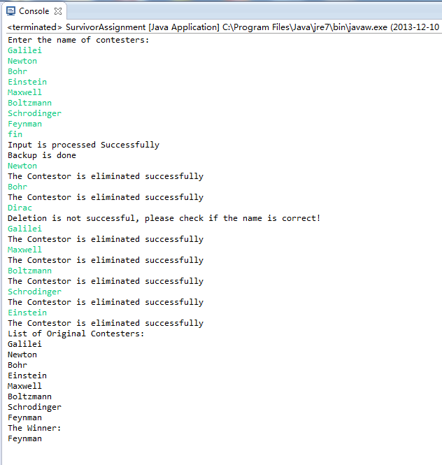

001 /*--------------------------------------------------------------------------------------*/ 002 /* SurvivorAssignment.java */ 003 /* This program simulate the TV show Survivor. It stores contesters in a liked list. It*/ 004 /* has the following processed:Input, Backup, elimination and summary. */ 005 /*--------------------------------------------------------------------------------------*/ 006 /* Author: Hanzhen Lin */ 007 /* Date: 2013,Dec,10 */ 008 /*--------------------------------------------------------------------------------------*/ 009 /* Input:User input from standard input containing a list of original contesters and */ 010 /* contesters to eliminate. */ 011 /* Output: Response of the processes (whether it is successful or not, and the summary */ 012 /* of original contesters and the winner. */ 013 /*--------------------------------------------------------------------------------------*/ 014 import java.util.Scanner;//Import Scanner for input 015 016 class SurvivorNode{//The class for nodes in the liked list. 017 String name; //The name of the contester. 018 SurvivorNode next; 019 //The next node that this node points to 020 SurvivorNode (String nameIn){ 021 //Initializer for the node. It generates nodes according 022 //to the name provided in the parameter. 023 name=nameIn; 024 next=null; 025 } 026 } 027 028 class SurvivorList{ 029 //The class that stores a cyclic linked list. The head & tail of the list 030 //in maintained and the next node of tail always points to the head. 031 SurvivorNode head; 032 SurvivorNode tail; 033 SurvivorList(){ 034 head=null; 035 tail=null; 036 } 037 void add(String dataIn){ 038 //this method adds one node to the liked list. 039 if(tail!=null){ 040 //if it is not the first node in the list, append 041 //new node after the tail and update the new tail 042 tail.next=new SurvivorNode(dataIn); 043 tail=tail.next; 044 tail.next=head; 045 } 046 else{ 047 //else, create a new node which is both head and tail. 048 head=new SurvivorNode(dataIn); 049 head.next=head; 050 tail=head; 051 } 052 } 053 boolean delete(String dataIn){ 054 //this method deletes one node from the liked list. 055 SurvivorNode i=head,j=tail;//tail is the previous node of head. 056 while(true){ 057 //scan each node in the list. If there is such node,make the 058 //previous node points to the node after current node to delete. 059 if(i.name.equals(dataIn)){ 060 if(i==head){head=i.next;} 061 if(i==tail){tail=j;} 062 j.next=i.next; 063 return true;//return true if the deletion is successful. 064 } 065 i=i.next; j=j.next;//j is maintained as the previous node of i. 066 if(i==head){break;} 067 //if i equals head, all nodes have been visited, quit the loop. 068 } 069 return false;//return false if the node is not in the list. 070 } 071 } 072 073 public class SurvivorAssignment { 074 //The major class of this file, which deal with the processes in the game. 075 SurvivorList list,bklist;//"list" is The list of current survivors 076 //and the "bklist" is the backup list of original contesters. 077 public void input(Scanner scan){ 078 //Deals with user input. It adds nodes to "list" using names received. 079 list=new SurvivorList(); 080 String name; 081 while(scan.hasNext()){//if there is no string left, terminate loop. 082 name=scan.next();//input a string 083 if(name.equals("fin")){ 084 return;//"fin" indicates the end of the List, so it ends. 085 } 086 list.add(name);//adds nodes to "list" using names received 087 } 088 } 089 public void backUp(){ 090 //This method deals with the backup process. It scans each nodes in 091 //"list" and add those nodes into "bklist" 092 bklist=new SurvivorList(); 093 SurvivorNode i=list.head;//i visits each node in the list. 094 while(true){ 095 bklist.add(i.name); 096 i=i.next; 097 if(i==list.head){break;}//if i equals the head of 098 //list, all nodes have been visited, terminates the loop. 099 } 100 } 101 public void elimination(Scanner scan){ 102 //this method deals with the elimination process. 103 String name; 104 while(scan.hasNext() && list.head!=list.tail){ 105 //if there is no string left or there is only one node left 106 //in the list indicated by head==tail, stop the loop. 107 name=scan.next();//input a string 108 if( !list.delete(name) ){//if deletion fails, notifies the user. 109 System.out.println 110 ("Deletion is not successful, please " + 111 "check if the name is correct!"); 112 } 113 else{//if deletion is successful, tells the user as well. 114 System.out.println("The Contestor " + 115 "is eliminated successfully"); 116 } 117 //display(); for debugging. 118 if(list.head==list.tail){return;} 119 //if there is only one node left, terminates the method. 120 } 121 } 122 public void summary(){//summary process, which prints the final result. 123 System.out.println("List of Original Contesters:"); 124 SurvivorNode i=bklist.head; 125 while(true){ 126 System.out.println(i.name); 127 i=i.next; 128 if(i==bklist.head){break;} 129 }//scan each nodes in the "bklist" and output there names as the list 130 //of original contesters. Similar process as in method"backup()". 131 System.out.println("The Winner:"); 132 System.out.println(list.head.name); 133 //print the name of the winner, the only node in "list" 134 } 135 public void display(){//for debugging use, similar to "summary()" 136 System.out.println("list :"); 137 SurvivorNode i=list.head; 138 while(true){ 139 System.out.print(i.name+" "); 140 i=i.next; 141 if(i==list.head){break;} 142 } 143 System.out.println(); 144 System.out.println("bklist :"); 145 i=bklist.head; 146 while(true){ 147 System.out.print(i.name+" "); 148 i=i.next; 149 if(i==bklist.head){break;} 150 } 151 System.out.println(); 152 } 153 public static void main(String[] args) {//main method; 154 SurvivorAssignment survivor=new SurvivorAssignment(); 155 Scanner scan=new Scanner(System.in);//create a scanner using stdin. 156 System.out.println("Enter the name of contesters:"); 157 survivor.input(scan);//input process 158 System.out.println("Input is processed Successfully"); 159 survivor.backUp();//backup process 160 System.out.println("Backup is done"); 161 survivor.elimination(scan);//elimination process 162 survivor.summary();//summary process. 163 } 164 }
Screen Capture for testing data:
